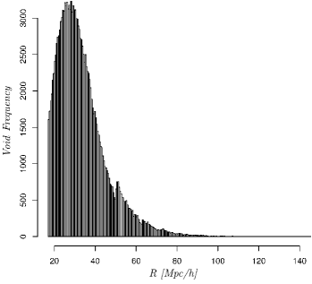
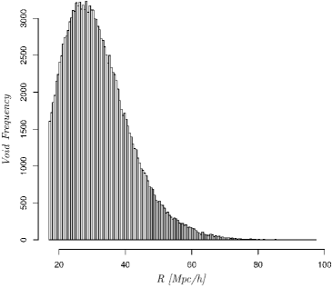
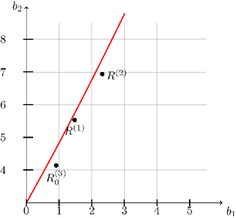
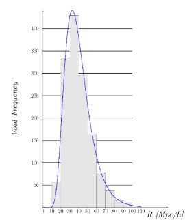
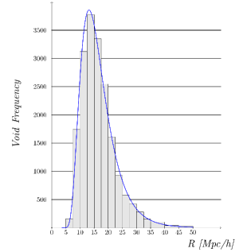
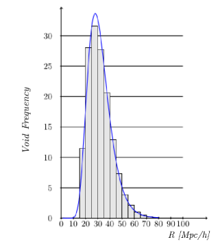

منظور إحصائي جديد لتوزيع الفراغات الكونية
الملخص
في هذه الدراسة نحصل على توزيع أحجام الفراغات في صورة دالة احتمال للفراغات (VPF) لوغاريتمية طبيعية، مستقلة عن الانزياح الأحمر، وذات  معلمات، مباشرة من Cosmic Void Catalog (CVC). وعلى الرغم من أن كثيرًا من النماذج الإحصائية لتوزيعات الفراغات تستند إلى العدّ داخل خلايا موضوعة عشوائيًا، فإن دالة احتمال الفراغات اللوغاريتمية الطبيعية التي نحصل عليها هنا مستقلة عن شكل الفراغات بفضل كاشف الفراغات الخالي من المعلمات في CVC. نستخدم ثلاث جماعات من الفراغات مأخوذة من CVC، مولدة بواسطة نماذج Halo Occupation Distribution (HOD) Mocks المضبوطة على ثلاث عينات صورية من SDSS، لدراسة توزيع الفراغات إحصائيًا وآثار البيئات في توزيع الأحجام. ونتيجة لذلك، يتبين أن توزيعات أحجام الفراغات المستخرجة من عينات HOD Mock تحقق التوزيع اللوغاريتمي الطبيعي ذي
معلمات، مباشرة من Cosmic Void Catalog (CVC). وعلى الرغم من أن كثيرًا من النماذج الإحصائية لتوزيعات الفراغات تستند إلى العدّ داخل خلايا موضوعة عشوائيًا، فإن دالة احتمال الفراغات اللوغاريتمية الطبيعية التي نحصل عليها هنا مستقلة عن شكل الفراغات بفضل كاشف الفراغات الخالي من المعلمات في CVC. نستخدم ثلاث جماعات من الفراغات مأخوذة من CVC، مولدة بواسطة نماذج Halo Occupation Distribution (HOD) Mocks المضبوطة على ثلاث عينات صورية من SDSS، لدراسة توزيع الفراغات إحصائيًا وآثار البيئات في توزيع الأحجام. ونتيجة لذلك، يتبين أن توزيعات أحجام الفراغات المستخرجة من عينات HOD Mock تحقق التوزيع اللوغاريتمي الطبيعي ذي  معلمات. إضافة إلى ذلك، نجد أنه قد توجد علاقة بين التشكل الهرمي والالتواء والتفرطح في التوزيع اللوغاريتمي الطبيعي لكل فهرس. ونبين أيضًا أن شكل التوزيع ذي
معلمات. إضافة إلى ذلك، نجد أنه قد توجد علاقة بين التشكل الهرمي والالتواء والتفرطح في التوزيع اللوغاريتمي الطبيعي لكل فهرس. ونبين أيضًا أن شكل التوزيع ذي  معلمات المستخرج من العينات يشبه على نحو لافت توزيع الكتل اللوغاريتمي الطبيعي للمجرات المستخلص من الدراسات العددية. وقد يشير هذا التشابه بين توزيعي حجم الفراغات وكتلة المجرات إلى دليل محتمل على آليات لاخطية تؤثر في الفراغات والمجرات معًا، مثل التراكم واسع النطاق والتأثيرات المدية. وبالنظر إلى أن جميع الفراغات في هذه الدراسة مولدة من نماذج مجرية صورية وتظهر بنى هرمية على مستويات مختلفة، فقد يكون من الممكن أن تؤثر الآليات اللاخطية نفسها التي تحكم توزيع الكتلة في توزيع أحجام الفراغات.
معلمات المستخرج من العينات يشبه على نحو لافت توزيع الكتل اللوغاريتمي الطبيعي للمجرات المستخلص من الدراسات العددية. وقد يشير هذا التشابه بين توزيعي حجم الفراغات وكتلة المجرات إلى دليل محتمل على آليات لاخطية تؤثر في الفراغات والمجرات معًا، مثل التراكم واسع النطاق والتأثيرات المدية. وبالنظر إلى أن جميع الفراغات في هذه الدراسة مولدة من نماذج مجرية صورية وتظهر بنى هرمية على مستويات مختلفة، فقد يكون من الممكن أن تؤثر الآليات اللاخطية نفسها التي تحكم توزيع الكتلة في توزيع أحجام الفراغات.
Subject headings:
قواعد البيانات الفلكية: الفهارس—علم الكون: البنية واسعة النطاق—المجرات: العناقيد: الوسط داخل العناقيد—الطرائق: عددية، إحصائية1. مقدمة
تتشكل بذور البنية واسعة النطاق الحالية للكون من تقلبات كثافة غاوسية عشوائية في المراحل المبكرة من تطوره. وفي تقلبات الكثافة العشوائية هذه، تتطور المادة من نظام خطي إلى نظام شديد اللاخطية تقوده الاضطرابات الثقالية. وتشكل هذه الاضطرابات في حقل الكثافة الغاوسي البدائي البنية المعقدة للكون التي نرصدها اليوم. ونتيجة لذلك، فمن الطبيعي وصف دالة توزيع الاحتمال لتقلبات الكثافة بوصفها أداة إحصائية حاسمة لتحديد الأنواع المختلفة من بيئات الكون. فمثلًا، تمثل دالة توزيع المادة الغاوسية النظام الخطي، في حين تشير دالة التوزيع التي تنحرف عن الغاوسية إلى نظام شديد اللاخطية. وفي هذا الإطار، توجد لبنتان أساسيتان مهمتان للبنية واسعة النطاق: المجرات/المناطق فائقة الكثافة والفراغات/المناطق ناقصة الكثافة. تتشكل هاتان السمتان في البداية من حقل الكثافة الغاوسي البدائي نفسه. وبينما تتشكل الفراغات من صغريات حقل الكثافة، تتشكل المجرات عند عظميات الكثافة. ومع الزمن، حين تنمو المجرات في الكتلة، تميل الفراغات إلى فقدان كتلتها بسبب قوتها الثقالية الخاصة عبر النظام اللاخطي. وعلى الرغم من وجود نماذج ظاهراتية مختلفة لدالة توزيع الاحتمال (PDF) للمناطق فائقة الكثافة (مثل المجرات وعناقيد المجرات، إلخ) في الأنظمة اللاخطية (Saslaw, 1985; Lahav et al., 1993; Gaztañaga & Yokoyama, 1993; Ueda & Yokoyama, 1996)، فإن النماذج الإحصائية لدوال احتمال الفراغات (VPFs) (Fry, 1986; Elizalde & Gaztanaga, 1992; Coles & Jones, 1991) تستند إلى العدّ داخل خلايا موضوعة عشوائيًا وفق وصفة White (1979). وإضافة إلى دالة احتمال الفراغات هذه، تعد الكثافة العددية للفراغات إحصاءً رئيسيًا آخر لاستخلاص توزيع الفراغات. يبين Patiri et al. (2006a) أن هذه الكثافة العددية يمكن تقديرها تحليليًا باستعمال المحاكاة العددية أو الفهارس الصورية.
لقد دُرست النماذج الظاهراتية لدوال توزيع الاحتمال للمناطق فائقة الكثافة، ولا سيما دوال التوزيع ذات النقطة الواحدة وذات النقطتين، دراسة وافية. فدالة التوزيع ذات النقطتين أداة لنمذجة انحياز الهالات المظلمة وكذلك لاستخلاص الأخطاء في إحصاءات النقطة الواحدة (Colombi et al., 1995; Szapudi& Colombi, 1996)، في حين أن دالة التوزيع ذات النقطة الواحدة أداة مفيدة لإظهار تكتل الكون باستعمال إحصاءات العزوم العليا مثل الالتواء والتفرطح (Kayo et al., 2001). وتشير الرصود، وكذلك النماذج المستندة إلى المحاكاة العددية للمادة المظلمة الباردة لتوزيعات المجرات، إلى أن توزيع الكثافة يقارب جيدًا توزيعًا لوغاريتميًا طبيعيًا لا توزيعًا غاوسيًا (Hamilton, 1985; Bouchet et al., 1993; Coles & Jones, 1991; Kofman et al., 1994; Taylor & Watts, 2000). كذلك يبين Bernardeau (1992, 1994) أن دالة توزيع الاحتمال المحسوبة من نظرية الاضطراب في نظام لاخطي ضعيف تقترب من الشكل اللوغاريتمي الطبيعي عندما يكون طيف القدرة البدائي متناسبًا مع الدليل . وفيما بعد، وجد Kayo et al. (2001) أن دالة توزيع الاحتمال اللوغاريتمية الطبيعية ذات النقطة الواحدة يمكنها وصف توزيعات الكثافة بدقة، ليس فقط في النظام اللاخطي الضعيف، بل أيضًا في النظام شديد اللاخطية، وذلك باستعمال تقلبات الكثافة اللاخطية من محاكاة  -body ذات شروط ابتدائية غاوسية. ويشير Kayo et al. (2001) أيضًا إلى أن دالة توزيع الاحتمال هذه مستقلة إلى حد كبير عن شكل تقلبات الكثافة وطيف قدرتها. ومع ذلك، لا تزال الآلية الكامنة وراء الأصل الكوني للتوزيع اللوغاريتمي الطبيعي غير معروفة.
-body ذات شروط ابتدائية غاوسية. ويشير Kayo et al. (2001) أيضًا إلى أن دالة توزيع الاحتمال هذه مستقلة إلى حد كبير عن شكل تقلبات الكثافة وطيف قدرتها. ومع ذلك، لا تزال الآلية الكامنة وراء الأصل الكوني للتوزيع اللوغاريتمي الطبيعي غير معروفة.
في هذه الدراسة نقرر أن نموذجًا معياريًا معلميًا محددًا يمكنه ملاءمة عينات من أنصاف أقطار الفراغات من Cosmic Void Catalog (CVC) لدى Sutter et al. (2012) بعد تقدير ملائم لمعلمات النموذج. والفهارس الصورية الثلاثة المدروسة، المشار إليها بالأسماء المختصرة المعطاة في CVC، هي N-body Mock وHOD Sparse وHOD Dense. وباستعمال هذه العينات نبين أن منظومة التوزيع اللوغاريتمي الطبيعي ذي  معلمات تقدم نموذجًا مرضيًا إلى حد معقول لتوزيع أحجام الفراغات، وهو مشابه على نحو لافت لتوزيع كتل المجرات لدى Kayo et al. (2001)، على افتراض أن حجم الفراغ يتناسب مع محتواه الكتلي (
معلمات تقدم نموذجًا مرضيًا إلى حد معقول لتوزيع أحجام الفراغات، وهو مشابه على نحو لافت لتوزيع كتل المجرات لدى Kayo et al. (2001)، على افتراض أن حجم الفراغ يتناسب مع محتواه الكتلي ( ). وللقيام بذلك نتبع ثلاث خطوات معيارية في التحليل الإحصائي. وهي الطور الاستكشافي، واختيار نموذج احتمالي، وتقدير معلمات النموذج، وأخيرًا التقييم البياني والعددي (انظر الفصل 4 §القسم 4.1 و4.2 في Fisher (1993) والمقدمة في Sheskin (2011) للاطلاع على عرض عام للمبادئ الأساسية وبعض المصطلحات المستعملة في مجالات الإحصاء الوصفي والتقدير وإجراءات حسن المطابقة).
). وللقيام بذلك نتبع ثلاث خطوات معيارية في التحليل الإحصائي. وهي الطور الاستكشافي، واختيار نموذج احتمالي، وتقدير معلمات النموذج، وأخيرًا التقييم البياني والعددي (انظر الفصل 4 §القسم 4.1 و4.2 في Fisher (1993) والمقدمة في Sheskin (2011) للاطلاع على عرض عام للمبادئ الأساسية وبعض المصطلحات المستعملة في مجالات الإحصاء الوصفي والتقدير وإجراءات حسن المطابقة).
2. فهرس الفراغات والبيانات العددية
لدراسة دالة توزيع أحجام الفراغات إحصائيًا في المحاكاة، نستعمل هنا فهرس CVC العام لدى Sutter et al. (2012). يحتوي CVC على فهرسين رئيسيين: فهرس كامل مناسب لمسوح مجرات الفراغات، وفهرس خال من الانحياز للفراغات يوفر عينة عادلة من أشكال الفراغات واصطفافاتها، إذ تتراوح أنصاف الأقطار الفعالة للفراغات بين و  (Sutter et al., 2012). وجميع عينات البيانات التي نستعملها هنا من CVC مولدة من محاكاة
(Sutter et al., 2012). وجميع عينات البيانات التي نستعملها هنا من CVC مولدة من محاكاة  للمادة المظلمة الباردة (
للمادة المظلمة الباردة ( CDM) من نوع N-body، وذلك باستعمال طريقة N-body بشيفرة شجرية تكيفية تسمى شيفرة 2HOT (Sutter et al., 2014a, b). يستخرج Sutter et al. (2014a, b) الهالات من محاكاة N-body، ويستعملون مواقع الهالات وكتلها لإنتاج نموذج HOD. ومن ثم تُنتج فهارس المجرات من جماعة هالات باستعمال شيفرة Halo Occupation Distribution (HOD) لدى Tinker et al. (2006) ونموذج HOD لدى Zheng et al. (2007). وينشئ Sutter et al. (2014a) وSutter et al. (2014b) ثلاثة فهارس صورية: HOD Dense وHOD Sparse وN-body Mock. وفي هذه الفهارس، تُعرَّف الفراغات باستعمال النسخة المعدلة من كاشف الفراغات ZOBOV الخالي من المعلمات (Neyrick, 2008; Lavaux & Wandelt, 2012; Sutter et al., 2012).
CDM) من نوع N-body، وذلك باستعمال طريقة N-body بشيفرة شجرية تكيفية تسمى شيفرة 2HOT (Sutter et al., 2014a, b). يستخرج Sutter et al. (2014a, b) الهالات من محاكاة N-body، ويستعملون مواقع الهالات وكتلها لإنتاج نموذج HOD. ومن ثم تُنتج فهارس المجرات من جماعة هالات باستعمال شيفرة Halo Occupation Distribution (HOD) لدى Tinker et al. (2006) ونموذج HOD لدى Zheng et al. (2007). وينشئ Sutter et al. (2014a) وSutter et al. (2014b) ثلاثة فهارس صورية: HOD Dense وHOD Sparse وN-body Mock. وفي هذه الفهارس، تُعرَّف الفراغات باستعمال النسخة المعدلة من كاشف الفراغات ZOBOV الخالي من المعلمات (Neyrick, 2008; Lavaux & Wandelt, 2012; Sutter et al., 2012).
أُنتج HOD Dense وHOD Sparse بمحاكاة للمادة المظلمة تضم جسيمًا في صندوق  Gpc/h، وأُبقيت جميع الجسيمات في الفضاء الحقيقي عند
Gpc/h، وأُبقيت جميع الجسيمات في الفضاء الحقيقي عند  ، وضُبطت على ملاءمات HOD الرصدية (Sutter et al., 2014a). ونتيجة لذلك، ينبع الفرق بين هذين الفهرسين من دقتهما ومن مجموعات البيانات الرصدية التي ضُبطا عليها. يتكون فهرس HOD Sparse الصوري من فراغًا ذات أنصاف أقطار فعالة صغرى مقدارها
، وضُبطت على ملاءمات HOD الرصدية (Sutter et al., 2014a). ونتيجة لذلك، ينبع الفرق بين هذين الفهرسين من دقتهما ومن مجموعات البيانات الرصدية التي ضُبطا عليها. يتكون فهرس HOD Sparse الصوري من فراغًا ذات أنصاف أقطار فعالة صغرى مقدارها 
 (
(  )، ويمثل فهرس الفراغات هذا عينة مجرية ذات دقة منخفضة نسبيًا بكثافة قدرها جسيمًا لكل
)، ويمثل فهرس الفراغات هذا عينة مجرية ذات دقة منخفضة نسبيًا بكثافة قدرها جسيمًا لكل  مكعب، مطابقة للكثافة العددية وتكتل عينة المجرات SDSS DR
مكعب، مطابقة للكثافة العددية وتكتل عينة المجرات SDSS DR (Dawson et al., 2013) باستعمال المعلمات التي وجدها Manera et al. (2013) (، ، ، ، و المختارة لملاءمة الكثافة العددية المتوسطة). ويضم فهرس HOD Dense فراغًا ذات أنصاف أقطار فعالة صغرى مقدارها Mpc/h، ويتضمن عينات مجرية ذات دقة أعلى نسبيًا بكثافة قدرها جسيمًا من المادة المظلمة لكل Mpc/h مكعب، مطابقة للعينة الرئيسة SDSS DR (Strauss et al., 2002) باستعمال مجموعة واحدة من المعلمات التي وجدها Zehavi et al. (2011) (، ، ، ). أما فهرس N-body Mock فهو HOD Mock مفرد في الفضاء الحقيقي عند ، مولد بمحاكاة للمادة المظلمة تضم جسيمًا (بدقة كتلة جسيم قدرها ) في صندوق Gpc/h، ومضبوط على SDSS DR
(Dawson et al., 2013) باستعمال المعلمات التي وجدها Manera et al. (2013) (، ، ، ، و المختارة لملاءمة الكثافة العددية المتوسطة). ويضم فهرس HOD Dense فراغًا ذات أنصاف أقطار فعالة صغرى مقدارها Mpc/h، ويتضمن عينات مجرية ذات دقة أعلى نسبيًا بكثافة قدرها جسيمًا من المادة المظلمة لكل Mpc/h مكعب، مطابقة للعينة الرئيسة SDSS DR (Strauss et al., 2002) باستعمال مجموعة واحدة من المعلمات التي وجدها Zehavi et al. (2011) (، ، ، ). أما فهرس N-body Mock فهو HOD Mock مفرد في الفضاء الحقيقي عند ، مولد بمحاكاة للمادة المظلمة تضم جسيمًا (بدقة كتلة جسيم قدرها ) في صندوق Gpc/h، ومضبوط على SDSS DR في الحجم المكعب الكامل باستعمال معلمات HOD الموجودة في Manera et al. (2013). وعلى الرغم من أن فهرس N-body Mock عولج بطريقة مختلفة قليلًا عن HOD Sparse وHOD Dense، فإنه فهرس HOD صوري ويستعمل المعلمات الكونية للسنة الأولى من Planck (Planck Collaboration, 2014). ويتكون N-body Mock من
في الحجم المكعب الكامل باستعمال معلمات HOD الموجودة في Manera et al. (2013). وعلى الرغم من أن فهرس N-body Mock عولج بطريقة مختلفة قليلًا عن HOD Sparse وHOD Dense، فإنه فهرس HOD صوري ويستعمل المعلمات الكونية للسنة الأولى من Planck (Planck Collaboration, 2014). ويتكون N-body Mock من  فراغًا (Sutter et al., 2014b).
فراغًا (Sutter et al., 2014b).
من المهم على وجه خاص أن نذكر أن كلًا من N-body Mock وHOD Sparse يمثلان فراغات مولدة من نماذج مجرية صورية ذات كثافة منخفضة نسبيًا، في حين يتكون HOD Dense من جماعات فراغات مولدة من فهرس مجري صوري ذي كثافة عالية نسبيًا. ونتيجة لذلك، قد تساعدنا هذه العينات على تحديد بعض العلاقات الممكنة بين توزيع أحجام الفراغات والبيئة. ونعتمد هنا عمق الشجرة الأقصى مؤشرًا للبيئة. لاحظ أن عمق الشجرة الأقصى هو الطول من الجذر إلى طرف أطول شجرة في الهرمية كما عرّفه Sutter et al. (2014a)، وهو يبين مقدار البنى التحتية في الفراغ الأكثر تعقيدًا (Sutter et al., 2014a). ووفقًا لذلك، يمتلك HOD Dense وHOD Sparse عمقي شجرة أقصيين قدرهما  و
و على الترتيب (Sutter et al., 2014a)، في حين يُظهر N-body Mock فراغات الجذر فقط، عند قاعدة هرمية الشجرة، ولذلك لا يكون لها آباء، مما يشير إلى أن عمق الشجرة الأقصى لهذه العينة هو (Sutter et al., 2014b).
على الترتيب (Sutter et al., 2014a)، في حين يُظهر N-body Mock فراغات الجذر فقط، عند قاعدة هرمية الشجرة، ولذلك لا يكون لها آباء، مما يشير إلى أن عمق الشجرة الأقصى لهذه العينة هو (Sutter et al., 2014b).
سنرمز هنا إلى العينات HOD Sparse وHOD Dense وN-body Mock بالرموز و و على الترتيب. وبينما تمثل () أسماء العينات، فإن تمثل نقاط البيانات.
3. الطور الاستكشافي
تتمثل الخطوة الأولى في الطور الاستكشافي في فحص المؤشرات البيانية والعددية الأساسية للعينات، مثل المدرجات التكرارية، ومعلمات الموقع (المدى والوسط والوسيط والمنوال)، أو التشتت (الانحراف المعياري)، والشكل (الالتواء والتفرطح).
لننظر أولًا في رسوم البيانات الخام. تظهر سمات مفيدة من معاينة سريعة للمدرجات التكرارية. فبينما تُظهر مدرجات  و
و (انظر الشكل 3) سمات عينات مسحوبة من جماعة أصلية واحدة، يظهر منوال موضعي غير متوقع في
(انظر الشكل 3) سمات عينات مسحوبة من جماعة أصلية واحدة، يظهر منوال موضعي غير متوقع في  قرب القيمة Mpc/h، انظر الشكل 1، اللوحة اليسرى. وهذا يوحي بأن N-body Mock، أي
قرب القيمة Mpc/h، انظر الشكل 1، اللوحة اليسرى. وهذا يوحي بأن N-body Mock، أي  ، ينبغي أن يُنظر إليه على نحو مفيد بوصفه عينة مسحوبة لا من جماعة واحدة، بل من جماعتين أو أكثر من الفراغات ذات قيم كثافة مركزية مختلفة. وبعبارة أخرى، فمن المعقول إنجاز مهمة تصنيف. ويُقصد بالأخيرة المعنى الكلاسيكي في الإحصاء الرياضي، كما في §44.1 من Kendall & Stuart (1977) مثلًا؛ فهي تتمثل في التمييز بين جماعتين أو أكثر على أساس قياسات متعددة المتغيرات.
، ينبغي أن يُنظر إليه على نحو مفيد بوصفه عينة مسحوبة لا من جماعة واحدة، بل من جماعتين أو أكثر من الفراغات ذات قيم كثافة مركزية مختلفة. وبعبارة أخرى، فمن المعقول إنجاز مهمة تصنيف. ويُقصد بالأخيرة المعنى الكلاسيكي في الإحصاء الرياضي، كما في §44.1 من Kendall & Stuart (1977) مثلًا؛ فهي تتمثل في التمييز بين جماعتين أو أكثر على أساس قياسات متعددة المتغيرات.
|
  |
 المؤلفة من الفراغات ذات الكثافة المركزية الصفرية فقط (اللوحة اليمنى).
المؤلفة من الفراغات ذات الكثافة المركزية الصفرية فقط (اللوحة اليمنى).وفي هذا الصدد، تشير معاينة أدق للخصائص العددية الأربع عشرة الباقية للفراغات إلى أن الكثافة المركزية ستوفر لنا معيارًا للتصنيف. فمن بين  فراغًا قيد الدراسة، توجد فراغات ذات كثافة مركزية تساوي صفرًا. وسيرمز إلى العينة الفرعية من
فراغًا قيد الدراسة، توجد فراغات ذات كثافة مركزية تساوي صفرًا. وسيرمز إلى العينة الفرعية من  ، المؤلفة من أنصاف أقطار هذه الفراغات، بالرمز
، المؤلفة من أنصاف أقطار هذه الفراغات، بالرمز  . واللافت أن المنوال الموضعي الملحوظ في
. واللافت أن المنوال الموضعي الملحوظ في  لا يظهر بعد ذلك في
لا يظهر بعد ذلك في  . وتحقق الأخيرة الخصائص البيانية الأساسية المتوقعة من عينة مسحوبة من جماعة واحدة، انظر الشكل 1 (اللوحة اليمنى).
. وتحقق الأخيرة الخصائص البيانية الأساسية المتوقعة من عينة مسحوبة من جماعة واحدة، انظر الشكل 1 (اللوحة اليمنى).
لننتقل الآن إلى الدراسة العددية لعيناتنا  و
و و
و .
إن الوسط والعزوم المركزية لعينة هي و. ويعد التباين
.
إن الوسط والعزوم المركزية لعينة هي و. ويعد التباين  المؤشر الأكثر شيوعًا للتشتت، في حين أن المؤشرات الواسعة الاستعمال لشكل توزيع العينة هي الالتواء والتفرطح (انظر الصيغ ص. 51 في Johnson et al. (1994)، و ص. 85 في Kendall & Stuart (1977)). وترد قيم هذه العزوم المحسوبة من العينات في الجدول 1.
المؤشر الأكثر شيوعًا للتشتت، في حين أن المؤشرات الواسعة الاستعمال لشكل توزيع العينة هي الالتواء والتفرطح (انظر الصيغ ص. 51 في Johnson et al. (1994)، و ص. 85 في Kendall & Stuart (1977)). وترد قيم هذه العزوم المحسوبة من العينات في الجدول 1.
 ، والتفرطح
، والتفرطح  لتوزيعات العينات.
لتوزيعات العينات.في الجدول 1 نرى أن التوزيعات التجريبية الثلاثة تشترك في خاصية كونها ملتوية موجبًا بدرجة ملحوظة () وحادة التفرطح (). تذكّر أن الالتواء  يقيس الدرجة التي يكون بها التوزيع غير متماثل. أما التفرطح فيقيس انحناء التوزيع. وبينما يتميز التوزيع الحاد التفرطح (وعلى التوالي المنبسط التفرطح) بدرجة عالية (وعلى التوالي منخفضة) من حدة القمة، يقدم التوزيع متوسط التفرطح حدة قمة تُعد متوسطة عندما يكون ، وهي قيمة التفرطح لتوزيع طبيعي ذي متوسط وتباين اعتباطيين (انظر Sheskin (2011) ص. 16-30 لمزيد من التفاصيل). ومن بين العائلات المعلمية الكلاسيكية للتوزيعات، تظهر كثافة المتغير العشوائي اللوغاريتمي الطبيعي ذي المعلمات الثلاث ، المعطاة بـ
يقيس الدرجة التي يكون بها التوزيع غير متماثل. أما التفرطح فيقيس انحناء التوزيع. وبينما يتميز التوزيع الحاد التفرطح (وعلى التوالي المنبسط التفرطح) بدرجة عالية (وعلى التوالي منخفضة) من حدة القمة، يقدم التوزيع متوسط التفرطح حدة قمة تُعد متوسطة عندما يكون ، وهي قيمة التفرطح لتوزيع طبيعي ذي متوسط وتباين اعتباطيين (انظر Sheskin (2011) ص. 16-30 لمزيد من التفاصيل). ومن بين العائلات المعلمية الكلاسيكية للتوزيعات، تظهر كثافة المتغير العشوائي اللوغاريتمي الطبيعي ذي المعلمات الثلاث ، المعطاة بـ
| (1) |
(انظر ص. 208 في Johnson et al. (1994))، بوصفها مرشحًا طبيعيًا لملاءمة توزيعات الأحجام للعينات HOD Dense وHOD Sparse وN-body Mock. ويتبع متغير عشوائي توزيع إذا كان يتبع توزيعًا غاوسيًا بمتوسط وتباين . وهذا التوزيع اللوغاريتمي الطبيعي ذو المعلمات الثلاث يشبه على نحو لافت توزيعات المجرات التي يستخلصها Kayo et al. (2001) من محاكاة  -body. ويتأكد دافعنا من القرب الشديد للأزواج ، المحسوبة من عينتنا، من الخط اللوغاريتمي الطبيعي المرصود في مستوى الالتواء-التفرطح الممثل في الشكل 2 (انظر الشكل 12.3 في Johnson et al. (1994) لنمط مشابه يشمل عدة عائلات معلمية من التوزيعات). وكما يظهر في الشكل 2، يمكن اعتبار توزيعات الفراغات من العينات الصورية لـ CVC متصرفة كتوزيعات لوغاريتمية طبيعية من حيث الالتواء والتفرطح.
-body. ويتأكد دافعنا من القرب الشديد للأزواج ، المحسوبة من عينتنا، من الخط اللوغاريتمي الطبيعي المرصود في مستوى الالتواء-التفرطح الممثل في الشكل 2 (انظر الشكل 12.3 في Johnson et al. (1994) لنمط مشابه يشمل عدة عائلات معلمية من التوزيعات). وكما يظهر في الشكل 2، يمكن اعتبار توزيعات الفراغات من العينات الصورية لـ CVC متصرفة كتوزيعات لوغاريتمية طبيعية من حيث الالتواء والتفرطح.

 على المحور الرأسي مقابل الالتواء
على المحور الرأسي مقابل الالتواء  على المحور الأفقي للتوزيع اللوغاريتمي الطبيعي (خط أحمر متصل). وتمثل النقاط التفرطح والالتواء لتوزيعات أحجام الفراغات لـ HOD Sparse
على المحور الأفقي للتوزيع اللوغاريتمي الطبيعي (خط أحمر متصل). وتمثل النقاط التفرطح والالتواء لتوزيعات أحجام الفراغات لـ HOD Sparse  وHOD Dense
وHOD Dense  ، وللعينة الفرعية من N-body Mock
، وللعينة الفرعية من N-body Mock  .
.بعض خصائص المتغير العشوائي هي:
-
1.
المدى: ،
-
2.
المنوال: ،
-
3.
الوسيط: ،
-
4.
المتوسط: .
بهذا يختتم الطور الاستكشافي من دراستنا، وسنتناول الآن مهمة تقدير المعلمات الثلاث للنموذج اللوغاريتمي الطبيعي من أجل و و .
.
4. التقدير
تنطوي مهمة التقدير لتوزيع لوغاريتمي طبيعي ذي  معلمات على صعوبات حسابية معروفة متصلة بعدم تقارب مقدر الإمكان الأعظم لمعلمة العتبة
معلمات على صعوبات حسابية معروفة متصلة بعدم تقارب مقدر الإمكان الأعظم لمعلمة العتبة  . وتناقش هذه المسألة في Johnson et al. (1994) §4.2. ومن ثم فإن الأداة المعيارية الأكثر ملاءمة هي طريقة العزوم. وتتكون هذه الطريقة من مساواة العزوم العينية الثلاثة الأولى و
. وتناقش هذه المسألة في Johnson et al. (1994) §4.2. ومن ثم فإن الأداة المعيارية الأكثر ملاءمة هي طريقة العزوم. وتتكون هذه الطريقة من مساواة العزوم العينية الثلاثة الأولى و و
و بالقيم السكانية المناظرة. وتوصف طريقة التقدير هذه في Johnson et al. (1994) §4.2، وبخاصة الصيغ ص. 228. وتمضي كما يلي. أولًا، يجب حساب الحل الحقيقي الوحيد للمعادلة
بالقيم السكانية المناظرة. وتوصف طريقة التقدير هذه في Johnson et al. (1994) §4.2، وبخاصة الصيغ ص. 228. وتمضي كما يلي. أولًا، يجب حساب الحل الحقيقي الوحيد للمعادلة
| (2) |
الذي يتبين بسهولة أنه معطى بالصيغة الصريحة
| (3) | |||||
(انظر Johnson et al. (1994)، المساواة الأخيرة ص. 228). وبعد تحديد هذا المعامل المساعد، تكون المقدرات لـ هي:
-
1.
،
-
2.
،
-
3.
،
(انظر الصيغ ص. 227-228 من §4.2 في Johnson et al. (1994)). وترد التقديرات المحسوبة من عيناتنا في الجدول 2.
يوضح حسن مطابقة نموذجنا بطريقتين. أولًا، عدديًا من خلال الجدول 3 والجدول 4 والجدول 5، حيث تُعطى القيم المتوقعة والقيم المرصودة لتوزيعات الفراغات الثلاثة.
 (HOD Sparse)،
(HOD Sparse)،  (HOD Dense)،
(HOD Dense)،  من فهرس N-body Mock مع التقديرات
من فهرس N-body Mock مع التقديرات ثانيًا، بيانيًا من خلال الشكل 3 الذي يعرض المدرجات التكرارية للعينات مع منحنيات الكثافات اللوغاريتمية الطبيعية التي تكون معلماتها هي التقديرات المحسوبة من العينات. وفي الحالتين كلتيهما يبدو حسن المطابقة جيدًا إلى حد معقول. لاحظ أنه بالنسبة إلى  ، فإن قيمة p المرتبطة بإحصاءات Kolmogorov وCramér-von Mises وAnderson-Darling تساوي القيمة المرتفعة على نحو لافت
، فإن قيمة p المرتبطة بإحصاءات Kolmogorov وCramér-von Mises وAnderson-Darling تساوي القيمة المرتفعة على نحو لافت  .
.
|
  |
 |
 و
و و
و مع منحنيات كثافة و و على الترتيب (من أعلى اليسار، وأعلى اليمين، وأسفل اليسار).
مع منحنيات كثافة و و على الترتيب (من أعلى اليسار، وأعلى اليمين، وأسفل اليسار).5. الاستنتاجات والمناقشة
نعلم اليوم أن الفراغات تهيمن على الحجم المرصود الكلي للبنية واسعة النطاق (Kirshner et al., 1981; Geller & Huchra, 1989; da Costa et al., 1994; Shectman et al., 1996)، وأنها شديدة الحساسية لبيئاتها التي يمكن أن تؤثر بقوة في أشكالها وكذلك في توزيعاتها (Sheth & van de Weygaert, 2004; Russell, 2013, 2014). ولذلك قد تؤدي دوال توزيع أحجام الفراغات دورًا مهمًا في فهم العمليات الديناميكية المؤثرة في تشكل بنية الكون (Croton et al., 2005; Goldberg & Vogeley, 2004; Hoyle et al., 2005).
في هذه الدراسة نبين أن منظومة التوزيعات اللوغاريتمية الطبيعية ذات معلمات تعطي نموذجًا مرضيًا لتوزيع أحجام الفراغات المستخرجة من ثلاثة فهارس HOD صورية مختلفة في CVC، وهي N-body Mock وHOD Sparse وHOD Dense. وتكتسب هذه الفهارس أهمية خاصة لأنها قد تتيح لنا مقارنة فراغات HOD الصورية في بيئات مختلفة. وكما ذُكر آنفًا، يوفر لنا HOD Dense وHOD Sparse مجموعتي البيانات لاستخلاص توزيعات الأحجام عند  (Sutter et al., 2014a)، في حين يحتوي فهرس N-body Mock على فراغًا عند
(Sutter et al., 2014a)، في حين يحتوي فهرس N-body Mock على فراغًا عند  ضمن مجموعة الحجم الكاملة للمجرات الصورية (Sutter et al., 2014b). ونجد أن فهرس N-body Mock،
ضمن مجموعة الحجم الكاملة للمجرات الصورية (Sutter et al., 2014b). ونجد أن فهرس N-body Mock،  ، يظهر جماعات فرعية من الفراغات بالنسبة إلى كثافاتها المركزية (اللوحة اليسرى، الشكل 1). ومن هذه الجماعات الفرعية نختار الجماعة التي تضم فقط الفراغات ذات الكثافة المركزية الصفرية. وتسمى هذه العينة الفرعية ، وهي تتكون من
، يظهر جماعات فرعية من الفراغات بالنسبة إلى كثافاتها المركزية (اللوحة اليسرى، الشكل 1). ومن هذه الجماعات الفرعية نختار الجماعة التي تضم فقط الفراغات ذات الكثافة المركزية الصفرية. وتسمى هذه العينة الفرعية ، وهي تتكون من  فراغًا وعمق شجرة أقصى قدره
فراغًا وعمق شجرة أقصى قدره  . ويحقق توزيع الأحجام المستخرج من هذه العينة الفرعية التوزيع اللوغاريتمي الطبيعي ذي
. ويحقق توزيع الأحجام المستخرج من هذه العينة الفرعية التوزيع اللوغاريتمي الطبيعي ذي  معلمات كما في الفهارس الأخرى. وكما يتضح، فإن هذه العينة الفرعية تمتلك أصغر قيمة لعمق الشجرة الأقصى مقارنة بالفهرسين اللذين نستعملهما في هذه الدراسة. وهذا مهم بوجه خاص لأنه يوفر لنا بيئة ثالثة لمقارنة العلاقة بين عمق الشجرة الأقصى ومعلمتي الشكل للتوزيع اللوغاريتمي الطبيعي للأحجام. ثم نقارن توزيعات أحجام الفراغات المستخرجة من هذه البيانات الصورية. ونتيجة لذلك، نبين أن العينات الثلاث كلها تلائم التوزيع اللوغاريتمي الطبيعي ذي
معلمات كما في الفهارس الأخرى. وكما يتضح، فإن هذه العينة الفرعية تمتلك أصغر قيمة لعمق الشجرة الأقصى مقارنة بالفهرسين اللذين نستعملهما في هذه الدراسة. وهذا مهم بوجه خاص لأنه يوفر لنا بيئة ثالثة لمقارنة العلاقة بين عمق الشجرة الأقصى ومعلمتي الشكل للتوزيع اللوغاريتمي الطبيعي للأحجام. ثم نقارن توزيعات أحجام الفراغات المستخرجة من هذه البيانات الصورية. ونتيجة لذلك، نبين أن العينات الثلاث كلها تلائم التوزيع اللوغاريتمي الطبيعي ذي  معلمات. وكما يظهر في الشكل 2 والجدول 3، تجتاز عينة HOD Sparse،
معلمات. وكما يظهر في الشكل 2 والجدول 3، تجتاز عينة HOD Sparse،  ، اختبارات Kolmogorov وCramér-von Mises وAnderson-Darling الإحصائية على نحو لافت بقيمة p عالية مقدارها ، وهو أمر نادر الحدوث مع عينة كبيرة الحجم.
، اختبارات Kolmogorov وCramér-von Mises وAnderson-Darling الإحصائية على نحو لافت بقيمة p عالية مقدارها ، وهو أمر نادر الحدوث مع عينة كبيرة الحجم.
بتذكّر أن الالتواء في التوزيع اللوغاريتمي الطبيعي يشير إلى عدم تماثل توزيع أحجام الفراغات، نلاحظ في الشكل 2، والجدول 3، و4 و5، أن HOD Dense،  ، هو أكثر العينات لا تماثلًا، إذ يبلغ الالتواء ، مقارنة بجماعات الفراغات في N-body Mock،
، هو أكثر العينات لا تماثلًا، إذ يبلغ الالتواء ، مقارنة بجماعات الفراغات في N-body Mock،  ذات ، وHOD Sparse،
ذات ، وHOD Sparse،  ذات (انظر أيضًا الجدول 1 لمقارنة المعلمات الأخرى لتوزيعات أحجام الفراغات بين العينات الثلاث). كذلك فإن توزيع أحجام الفراغات في N-body Mock،
ذات (انظر أيضًا الجدول 1 لمقارنة المعلمات الأخرى لتوزيعات أحجام الفراغات بين العينات الثلاث). كذلك فإن توزيع أحجام الفراغات في N-body Mock،  ، هو الأقل لا تماثلًا بين العينات الثلاث. وإضافة إلى ذلك، نجد أن توزيع الفراغات في HOD Dense يشير إلى تفرطح أعلى،
، هو الأقل لا تماثلًا بين العينات الثلاث. وإضافة إلى ذلك، نجد أن توزيع الفراغات في HOD Dense يشير إلى تفرطح أعلى،  ، من جماعة الفراغات في عينة HOD Sparse، ، في حين تُظهر عينة N-body Mock الفرعية أدنى تفرطح، . وكما يتبين، قد توجد علاقة بين قيم التفرطح والالتواء وعمق الشجرة الأقصى لتوزيع أحجام الفراغات. لاحظ أن HOD Dense يمتلك أعلى عمق شجرة أقصى،
، من جماعة الفراغات في عينة HOD Sparse، ، في حين تُظهر عينة N-body Mock الفرعية أدنى تفرطح، . وكما يتبين، قد توجد علاقة بين قيم التفرطح والالتواء وعمق الشجرة الأقصى لتوزيع أحجام الفراغات. لاحظ أن HOD Dense يمتلك أعلى عمق شجرة أقصى،  ، وكذلك أعلى قيم للتفرطح والالتواء
، وكذلك أعلى قيم للتفرطح والالتواء  بين العينات الثلاث، في حين يتكون توزيع الأحجام المستخرج من عينة N-body Mock الفرعية،
بين العينات الثلاث، في حين يتكون توزيع الأحجام المستخرج من عينة N-body Mock الفرعية،  ، من أدنى قيم لمعلمات شكل التوزيع (
، من أدنى قيم لمعلمات شكل التوزيع ( و
و ) وعمق الشجرة الأقصى
) وعمق الشجرة الأقصى  ، مع أخذ فراغات الجذر فقط في الحسبان. وبالنظر إلى أن عمق الشجرة الأقصى مقياس لمقدار البنى التحتية للفراغات، فقد يكون من الممكن تحديد صلة بين عدد البنى التحتية للفراغات ومدى التواء توزيع أحجام الفراغات وحدّة قمته.
، مع أخذ فراغات الجذر فقط في الحسبان. وبالنظر إلى أن عمق الشجرة الأقصى مقياس لمقدار البنى التحتية للفراغات، فقد يكون من الممكن تحديد صلة بين عدد البنى التحتية للفراغات ومدى التواء توزيع أحجام الفراغات وحدّة قمته.
لاحظ أن جميع توزيعات أحجام الفراغات لها التواء موجب، وقد ترتبط قوة الالتواء بطول ذيل التوزيع في نصف القطر (انظر الشكل 3). وإضافة إلى ذلك، فمن الطبيعي رؤية ذيل رفيع بسبب شكل التوزيع اللوغاريتمي الطبيعي في جميع الأحوال. فعلى سبيل المثال، يُظهر HOD Dense ( ) وHOD Sparse (
) وHOD Sparse ( ) ذيولًا أطول قليلًا في جهة أنصاف الأقطار الكبيرة مقارنة بتوزيع عينة N-body Mock الفرعية (
) ذيولًا أطول قليلًا في جهة أنصاف الأقطار الكبيرة مقارنة بتوزيع عينة N-body Mock الفرعية ( )، التي تمتلك أصغر التواء (الجدول 1 والشكل 3). وتكتسب تشكيلات الذيل الرفيع هذه في توزيعات أحجام الفراغات اللوغاريتمية الطبيعية المستنتجة من المحاكاة أهمية خاصة بسبب صلة محتملة بالتفاعل الديناميكي بين حجم الفراغات وتوزيعات المجرات. وبافتراض أن حجم الفراغ يتناسب مع محتواه الكتلي ()، أدركنا هنا أن توزيع المجرات ذي النقطة الواحدة الذي حصل عليه Kayo et al. (2001) من محاكاة N-body يبدو مشابهًا على نحو لافت لتوزيع الفراغات اللوغاريتمي الطبيعي الذي نحصل عليه (انظر المعادلة (1)). ومن ناحية أخرى، يمتلك توزيع الفراغات اللوغاريتمي الطبيعي معلمة إضافية واحدة أكثر من توزيع المجرات لدى Kayo et al. (2001)، مما يوفر ملاءمة أفضل لمجموعات بيانات الفراغات. ومن توزيعات المادة على المقاييس الصغيرة إلى الكبيرة في الكون، أي من الوسط بين النجمي إلى الوسط بين المجرات، توجد نماذج ودراسات رصدية لتفسير توزيع المادة اللوغاريتمي الطبيعي الملتوي. فمثلًا، يخلص Schneider et al. (2013) إلى أن تقلبات الكثافة الإحصائية، والتقطع، والحقول المغناطيسية يمكن أن تسبب زيادة عن التوزيع اللوغاريتمي الطبيعي، وأن تشكل النوى و/أو الانهيار العام للخيوط وتوزيع الغاز غير متساوي الحرارة يؤديان إلى ذيل يتبع قانون قوة. ويبين Pudritz & Kevlahan (2013) أن توزيع المجرات اللوغاريتمي الطبيعي الملتوي المرصود يمكن أن ينشأ من تفاعلات صدمية متكررة، من دون الحاجة إلى اضطراب مكتمل التطور. وقد تبين حديثًا أنه من الممكن رؤية تدفقات كتلية واسعة النطاق، مما يشير إلى أن إمكانية تأثيرات الاضطراب واسع النطاق في تشكل البنية لا يجوز إغفالها. وفي هذا السياق، يجد Wang et al. (2012) تدفقًا كتليًا واسع النطاق يقارب كرة نصف قطرها
)، التي تمتلك أصغر التواء (الجدول 1 والشكل 3). وتكتسب تشكيلات الذيل الرفيع هذه في توزيعات أحجام الفراغات اللوغاريتمية الطبيعية المستنتجة من المحاكاة أهمية خاصة بسبب صلة محتملة بالتفاعل الديناميكي بين حجم الفراغات وتوزيعات المجرات. وبافتراض أن حجم الفراغ يتناسب مع محتواه الكتلي ()، أدركنا هنا أن توزيع المجرات ذي النقطة الواحدة الذي حصل عليه Kayo et al. (2001) من محاكاة N-body يبدو مشابهًا على نحو لافت لتوزيع الفراغات اللوغاريتمي الطبيعي الذي نحصل عليه (انظر المعادلة (1)). ومن ناحية أخرى، يمتلك توزيع الفراغات اللوغاريتمي الطبيعي معلمة إضافية واحدة أكثر من توزيع المجرات لدى Kayo et al. (2001)، مما يوفر ملاءمة أفضل لمجموعات بيانات الفراغات. ومن توزيعات المادة على المقاييس الصغيرة إلى الكبيرة في الكون، أي من الوسط بين النجمي إلى الوسط بين المجرات، توجد نماذج ودراسات رصدية لتفسير توزيع المادة اللوغاريتمي الطبيعي الملتوي. فمثلًا، يخلص Schneider et al. (2013) إلى أن تقلبات الكثافة الإحصائية، والتقطع، والحقول المغناطيسية يمكن أن تسبب زيادة عن التوزيع اللوغاريتمي الطبيعي، وأن تشكل النوى و/أو الانهيار العام للخيوط وتوزيع الغاز غير متساوي الحرارة يؤديان إلى ذيل يتبع قانون قوة. ويبين Pudritz & Kevlahan (2013) أن توزيع المجرات اللوغاريتمي الطبيعي الملتوي المرصود يمكن أن ينشأ من تفاعلات صدمية متكررة، من دون الحاجة إلى اضطراب مكتمل التطور. وقد تبين حديثًا أنه من الممكن رؤية تدفقات كتلية واسعة النطاق، مما يشير إلى أن إمكانية تأثيرات الاضطراب واسع النطاق في تشكل البنية لا يجوز إغفالها. وفي هذا السياق، يجد Wang et al. (2012) تدفقًا كتليًا واسع النطاق يقارب كرة نصف قطرها  ، ناتجًا من البنى الضخمة المرتبطة بسور SDSS العظيم. وبأخذ أن الفراغات والمجرات/المناطق فائقة الكثافة تتشكل من حقل الكثافة البدائي نفسه في الحسبان، فقد يكون التشابه بين توزيعي حجم الفراغات وكتلة المجرات متوقعًا. ونتيجة لذلك، فمن الممكن أن تكون توزيعات المجرات والفراغات متناظرة بعضها مع بعض. وقد ينجم هذا التناظر عن البنى التحتية للفراغات بسبب التيارات المدية الداخلية وكذلك الخارجية، إذ تبين محاكاة
، ناتجًا من البنى الضخمة المرتبطة بسور SDSS العظيم. وبأخذ أن الفراغات والمجرات/المناطق فائقة الكثافة تتشكل من حقل الكثافة البدائي نفسه في الحسبان، فقد يكون التشابه بين توزيعي حجم الفراغات وكتلة المجرات متوقعًا. ونتيجة لذلك، فمن الممكن أن تكون توزيعات المجرات والفراغات متناظرة بعضها مع بعض. وقد ينجم هذا التناظر عن البنى التحتية للفراغات بسبب التيارات المدية الداخلية وكذلك الخارجية، إذ تبين محاكاة  -body والرصد أن دواخل الفراغات مملوءة بفراغات فرعية ومجرات بل وحتى خيوط (Gottlöber et al., 2003; Mathis & White, 2002; Benson et al., 2003; Patiri et al., 2006b; Kreckel et al., 2011). لاحظ أن إثبات هذه الصلة بين توزيع الفراغات وتوزيع كتل المجرات يستحق دراسة إحصائية منهجية مستقلة، ولا سيما باستعمال مجموعات بيانات حقيقية؛ لذلك نترك جواب هذه المسألة لدراسة مستقبلية.
-body والرصد أن دواخل الفراغات مملوءة بفراغات فرعية ومجرات بل وحتى خيوط (Gottlöber et al., 2003; Mathis & White, 2002; Benson et al., 2003; Patiri et al., 2006b; Kreckel et al., 2011). لاحظ أن إثبات هذه الصلة بين توزيع الفراغات وتوزيع كتل المجرات يستحق دراسة إحصائية منهجية مستقلة، ولا سيما باستعمال مجموعات بيانات حقيقية؛ لذلك نترك جواب هذه المسألة لدراسة مستقبلية.
إضافة إلى ذلك، تُعطى قمم التوزيعات بـ في الجدول 1. ويوفر أحجام الفراغات الأكثر هيمنة في توزيع أحجام الفراغات. ويبين الشكل 3 والجداول 1 أن الفراغات ذات الحجم  تهيمن على عينة HOD Sparse،
تهيمن على عينة HOD Sparse،  ، في حين تهيمن على توزيعات أحجام HOD Dense،
، في حين تهيمن على توزيعات أحجام HOD Dense،  ، وN-body Mock،
، وN-body Mock،  ، فراغات بأنصاف أقطار و
، فراغات بأنصاف أقطار و  على الترتيب. ويشير ذلك إلى أن توزيعات أحجام HOD Sparse وعينة N-body Mock الفرعية تميل إلى احتواء فراغات أكبر مقارنة بفراغات HOD Dense، بسبب بيئتها منخفضة الكثافة. وتتفق هذه النتيجة مع Watson et al. (2014); Jennings et al. (2013); Russell (2013, 2014). ومن ناحية أخرى، وكما ذُكر آنفًا، فإن فهرس N-body Mock له انزياح أحمر أعلى
على الترتيب. ويشير ذلك إلى أن توزيعات أحجام HOD Sparse وعينة N-body Mock الفرعية تميل إلى احتواء فراغات أكبر مقارنة بفراغات HOD Dense، بسبب بيئتها منخفضة الكثافة. وتتفق هذه النتيجة مع Watson et al. (2014); Jennings et al. (2013); Russell (2013, 2014). ومن ناحية أخرى، وكما ذُكر آنفًا، فإن فهرس N-body Mock له انزياح أحمر أعلى  من العينتين الأخريين، ولذلك قد توحي عينة N-body Mock بفراغات أكبر حجمًا عند
من العينتين الأخريين، ولذلك قد توحي عينة N-body Mock بفراغات أكبر حجمًا عند  مقارنة بـ HOD Sparse.
مقارنة بـ HOD Sparse.
على الرغم من وجود بعض المحاولات النظرية لفهم التطور الديناميكي والحراري والكيميائي لجماعة الفراغات، والتفاعل بين المجرات والوسط بين المجرات (Viel et al., 2008; Shang et al., 2007; Sheth & van de Weygaert, 2004; Russell, 2013, 2014)، فلا يزال التحقيق المنهجي في توزيعات أحجام الفراغات غائبًا. لذلك نبين في هذه الدراسة أن توزيعات أحجام الفراغات تحقق التوزيع اللوغاريتمي الطبيعي ذي  معلمات، وأن هذا التوزيع قد يكون مرشحًا جيدًا لإظهار الآثار البيئية واسعة النطاق في الفراغات. ويبدو أيضًا أن هناك علاقة بين قوة عمق الشجرة الأقصى ومعلمات توزيع أحجام الفراغات اللوغاريتمي الطبيعي ذي
معلمات، وأن هذا التوزيع قد يكون مرشحًا جيدًا لإظهار الآثار البيئية واسعة النطاق في الفراغات. ويبدو أيضًا أن هناك علاقة بين قوة عمق الشجرة الأقصى ومعلمات توزيع أحجام الفراغات اللوغاريتمي الطبيعي ذي  معلمات؛ أي الالتواء والتفرطح. ومن ناحية أخرى، فإن دراسة إحصائية موسعة لتوزيع أحجام الفراغات في بيانات حقيقية، وكذلك في مزيد من البيانات المحاكاة، أمر حاسم للفهم الكامل لآثار الشبكة الديناميكية واسعة النطاق بين المجرات والخيوط والفراغات من أجل الحصول على نتائج أدق.
معلمات؛ أي الالتواء والتفرطح. ومن ناحية أخرى، فإن دراسة إحصائية موسعة لتوزيع أحجام الفراغات في بيانات حقيقية، وكذلك في مزيد من البيانات المحاكاة، أمر حاسم للفهم الكامل لآثار الشبكة الديناميكية واسعة النطاق بين المجرات والخيوط والفراغات من أجل الحصول على نتائج أدق.
References
- Benson et al. (2003) Benson, A. J., Hoyle, F., Torres, F., & Vogeley, M. S., 1986, MNRAS, 340, 160
- Bernardeau (1992) Bernardeau, F., 1992, ApJ, 392, 1
- Bernardeau (1994) Bernardeau, F., 1994, A&A, 291, 697
- Bouchet et al. (1993) Bouchet, F. R., et al., 1993, ApJ, 417, 36
- Coles & Jones (1991) Coles, P. & Jones, B., 1991, MNRAS, 248, 1
- Colombi et al. (1995) Colombi, S., Bouchet, F. R., & Schaeffer, R., 1995, ApJS, 96, 401
- Croton et al. (2005) Croton, D. J. et al., 2005, MNRAS, 356, 1155
- da Costa et al. (1994) da Costa, L. N. et al., 1994, ApJ, 424, L1
- Dawson et al. (2013) Downson, K. S., 2013, MNRAS, 145, 10
- Elizalde & Gaztanaga (1992) Elizalde, E., & Gaztanaga, E., 1992, MNRAS, 254, 247
- Fisher (1993) Fisher, N. I., 1993, Statistical analysis of circular data (Cambridge, Cambridge University Press)
- Fry (1986) Fry, J. N., 1986, ApJ, 306, 358
- Gaztañaga & Yokoyama (1993) Gaztañaga, E., & Yokoyama, J., 1993, ApJ, 403, 450
- Geller & Huchra (1989) Geller, M. J., & Huchra, J. P., 1989, Science, 246, 897
- Goldberg & Vogeley (2004) Goldberg, D. M., & Vogeley, M. S., 2004, ApJ, 605, 1
- Gottlöber et al. (2003) Gottlöber, S., Łokas, E. L., Klypin, A., & Hoffman, Y., 2003, MNRAS, 344, 715
- Hamilton (1985) Hamilton, A. J. S., 1985, ApJ, 292, L35
- Hoyle et al. (2005) Hoyle, F., et al., 2005, ApJ, 620, 618
- Jennings et al. (2013) Jennings, E., Li, Y., & Hu, W., 2013, MNRAS, 434, 2167
- Johnson et al. (1994) Johnson, N.L, Kotz, S, & Balakrishnan, N., 1994, Continuous Univariate Distributions, Vol. 1 (2nd ed; Wiley)
- Kayo et al. (2001) Kayo, I., Taruya, A., & Suto, Y., 2001, ApJ, 561, 22
- Kendall & Stuart (1977) Kendall, M., & Stuart, A., 1977, The advanced theory of statistics. Vol 1: Distribution Theory, 2nd Ed., (New York, NY., Macmillan)
- Kendall & Stuart (1977) Kendall, M., & Stuart, A., 1977, The advanced theory of statistics. Vol 3: Design and Analysis, and Time-series, 2nd Ed., (New York, NY., Macmillan)
- Kirshner et al. (1981) Kirshner, R. P., Oemler, Jr., A., Schechter, P. L., & Shectman, S. A., 1981, ApJ, 248, L57
- Kofman et al. (1994) Kofman, L., Bertschinger, E., Gelb, J. M., Nusser, A., & Dekel, A., 1994, ApJ, 420, 44
- Kreckel et al. (2011) Kreckel, K., et al. 2011, AJ, 141, 4
- Lahav et al. (1993) Lahav, O., Itoh, M., Inagaki, S., & Suto, Y., 1993, ApJ, 402, 387
- Lavaux & Wandelt (2012) Lavaux, G., & Wandelt, B. D., 2012, ApJ, 754, 109
- Lee & Hoyle (2015) Lee, J., & Hoyle, F., 2015, ApJ, 803, 45
- Manera et al. (2013) Manera, M., et al., 2013, MNRAS, 428, 1036
- Mathis & White (2002) Mathis, H., & White, S. D. M., 2002, MNRAS, 337, 1193
- Neyrick (2008) Neyrinck, M. C., 2008, MNRAS, 386, 2101
- Patiri et al. (2006a) Patiri, S. G., Betancort-Rijo, J., & Prada, F., 2006, MNRAS, 368, 1132
- Patiri et al. (2006b) Patiri, S. G., Prada, F., Holtzman, J., Klypin, A. & Betancort-Rijo, J., 2006, MNRAS, 372, 1710
- Planck Collaboration (2014) Planck Collaboration, 2014, A&A, 571, A19
- Pudritz & Kevlahan (2013) Pudritz, R. E., & Kevlahan, N. K.-R., 2013, Philosophical Transactions of the Royal Society of London Series A, 371, 20248
- Russell (2013) Russell, E., 2013, MNRAS, 436, 3525
- Russell (2014) Russell, E., 2014, MNRAS, 438, 1630
- Ryu et al. (2003) Ryu, D., Kang, H., Hallman, E., & Jones, T. W., 2003, ApJ, 593, 599
- Saslaw (1985) Saslaw, W. C., 1985, Gravitational physics of stellar and galactic systems, Cambridge, 506, Cambridge University Press
- Schneider et al. (2013) Schneider, N. et al., 2013, ApJ, 766, L17
- Shang et al. (2007) Shang, C., Crotts, A., & Haiman, Z., 2007, ApJ, 671, 136
- Shectman et al. (1996) Shectman, S. A. et al., 1996, ApJ, 470, 172
- Sheth & van de Weygaert (2004) Sheth, R. K., & van de Weygaert, R., 2004, MNRAS, 350, 517
- Sheskin (2011) Sheskin, D. J., 2011, Handbook of parametric and nonparametric statistical procedures (Boca Raton: FL, CRC Press)
- Strauss et al. (2002) Strauss, M. A., 2002, AJ, 124, 1810
- Sutter et al. (2012) Sutter, P. M., Lavaux, G., Wandelt, B. D., & Weinberg, D. H., 2012, ApJ, 761, 44
- Sutter et al. (2014a) Sutter, P. M., Lavaux, G., Hamaus, N., Wandelt, B. D., Weinberg, D. H. & Warren, M. S., 2014, MNRAS, 442, 462
- Sutter et al. (2014b) Sutter, P. M., Lavaux, G., Wandelt, B. D., Weinberg, D. H., Warren, M. S., & Pisani, A., 2014, MNRAS, 442, 3127
- Szapudi& Colombi (1996) Szapudi, I., & Colombi, S., 1996, ApJ, 470, 131
- Taylor & Watts (2000) Taylor, A. N., & Watts, P. I. R., 2000, MNRAS, 314, 92
- Tinker et al. (2006) Tinker, J. L., Weinberg, D. H., & Zheng, Z., 2006, MNRAS, 368, 85
- Ueda & Yokoyama (1996) Ueda, H., & Yokoyama, J., 1996, MNRAS, 280, 754
- Viel et al. (2008) Viel, M., Colberg, J. M., & Kim, T.-S., 2008, MNRAS, 386, 1285
- Wang et al. (2012) Wang, H., Mo, H. J., Yang, X., & van den Bosch, F. C., 1979, MNRAS, 420, 1809
- Watson et al. (2014) Watson, W. A. et al., 2014, MNRAS, 437, 3776
- White (1979) White, S. D. M. 1979, MNRAS, 186, 145
- Zehavi et al. (2011) Zehavi, I. et al., 2011, ApJ, 736, 59
- Zheng et al. (2007) Zheng, Z., Coil, A. L., & Zehavi, I., 2007, ApJ, 667, 760